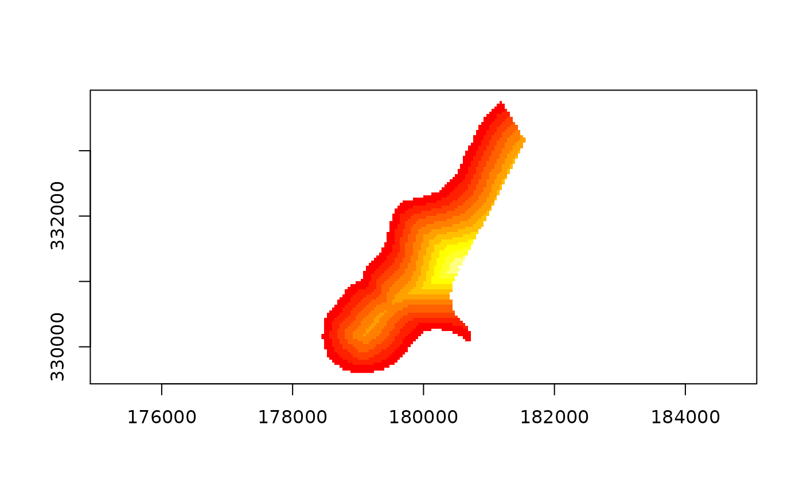
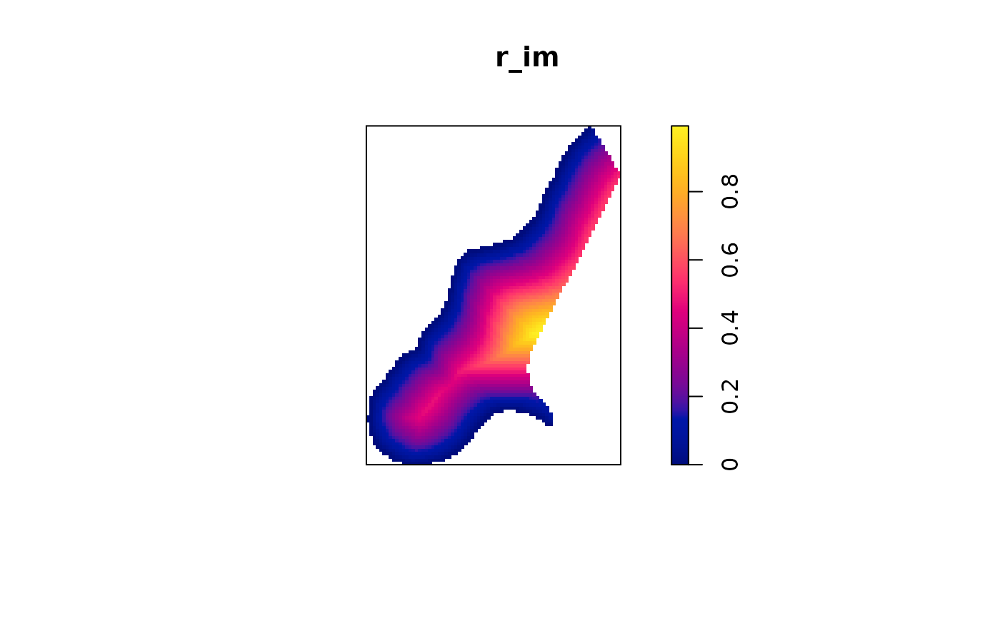

as.im.RdFunctions to convert between spatstats raster format im and sps SpatialGridDataFrame as well as one-way conversion from rasters rasterLayer to im. S4-style as() coercion can be used between im and SpatialGridDataFrame objects.
as.im.SpatialGridDataFrame(from) as.SpatialGridDataFrame.im(from) as.im.RasterLayer(from, factor.col.name = NULL)
| from | object to coerce from |
|---|---|
| factor.col.name | column name of |
signature(from = "SpatialGridDataFrame", to = "im")
signature(from = "im", to = "SpatialGridDataFrame")
A SpatialGridDataFrame object may contain several columns of
data such that several values are associated with each grid cell. In contrast an
im object can only contain a single variable value for each cell. In
as.im.SpatialGridDataFrame() the first data column is used. To convert
another column to im format simply extract this column first as shown in
the example below.
In spatstat all spatial objects are assumed to be planar. This means
that spatstat is not designed to work directly with geographic
(longitude and latitude) coordinates. If a sp object is declared to
have geographic (unprojected) coordinates maptools refuses to convert
directly to spatstat format. Rather, these should be projected first
using e.g. spTransform. If you know what you are doing, and
really want to force coercion, you can overwrite the proj4string of the
sp object with NA, proj4string(x) <- CRS(NA), which
will fool the system to think that the data is in local planar coordinates.
This is probably not a good idea!
Other converters between sp and spatstat:
as.ppp.SpatialPoints,
as.psp.SpatialLines,
as.owin.SpatialPolygons,
as.SpatialPolygons.tess.
Edzer Pebesma edzer.pebesma@uni-muenster.de, Roger Bivand
run <- FALSE if (require("spatstat.geom", quietly=TRUE)) run <- TRUE if (run) { ## Extract an example SpatialGridDataFrame and plot it data(meuse.grid) # A data.frame gridded(meuse.grid) = ~x+y # Now a SpatialPixelsDataFrame fullgrid(meuse.grid) <- TRUE # Finally a SpatialGridDataFrame mg_dist <- meuse.grid["dist"] # A SpatialGridDataFrame with a single column image(mg_dist, axes=TRUE) }if (run) { ## Convert back to SpatialGridDataFrame and plot it again mg2 <- as.SpatialGridDataFrame.im(mg_im) image(mg2, axes=TRUE) }#> #>#> #> #>if (run) { ## Convert SpatialGridDataFrame -> RasterLayer -> im and plot it r <- as(mg2, "RasterLayer") r_im <- as.im.RasterLayer(r) plot(r_im) }if (run) { rr <- raster(nrow=2, ncol=3) values(rr) <- 1:6 rr <- as.factor(rr) rrr <- rr f <- levels(rrr)[[1]] f$name <- c("vector", "of", "values") f$name2 <- letters[1:6] levels(rrr) <- f print(levels(rrr)) }#> [[1]] #> ID name name2 #> 1 1 vector a #> 2 2 of b #> 3 3 values c #> 4 4 vector d #> 5 5 of e #> 6 6 values f #>if (run) { }#> NULL